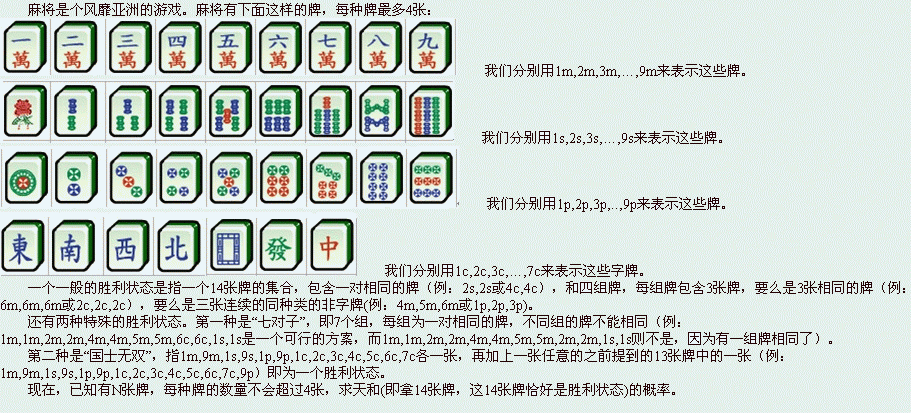

多组数据。对于每个测试点，第一行有一个数T，表示共T组数据。对于每组数据，第一行一个数N，接下来一行包含N个字符串，表示N张牌。具体参见样例。

多组数据。对于每个测试点，第一行有一个数T，表示共T组数据。对于每组数据，第一行一个数N，接下来一行包含N个字符串，表示N张牌。具体参见样例。
对于每组数据，输出一行，以最简分数形式表示所求的天和的概率。分子分母间用字母’/’分割（不含引号）。
4
14
1s 2s 3s 2c 2c 2c 2p 3p 4p 5m 6m 7m 1p 1p
14
1s 2s 3s 2c 2c 2c 2p 3p 4p 5m 6m 7m 1p 2p
25
1m 1m 9m 9m 1s 1s 9s 9s 1p 1p 9p 9p 1c 1c 2c 2c 3c 3c 4c 4c 5c 5c 6c 6c 7c
27
1m 1m 1m 2m 2m 2m 3m 3m 3m 4m 4m 4m 5m 5m 5m 6m 6m 6m 7m 7m 7m 8m 8m 8m 9m 9m 9m
1/1
0/1
1057/185725
44171/371450
对于100%的数据，数据组数T不超过10组，14<=N<=136。